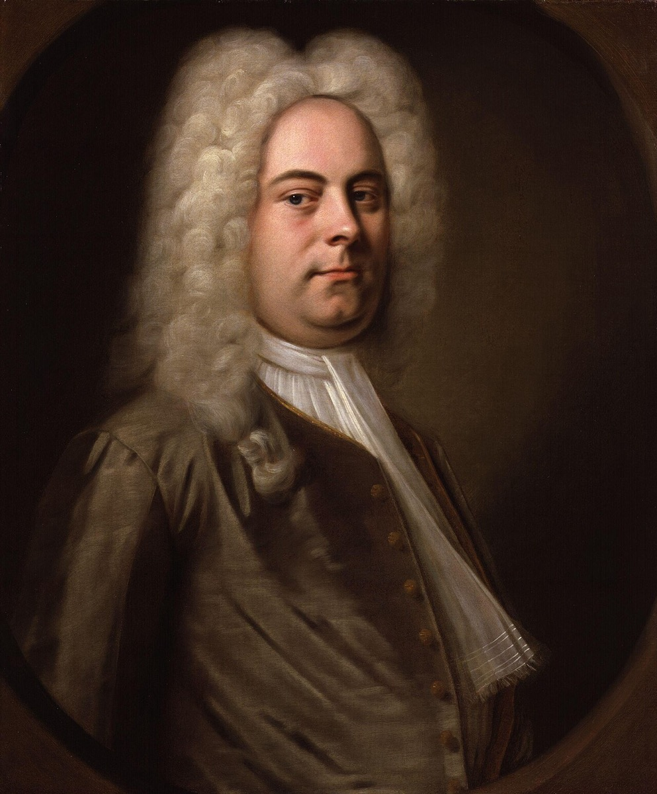

World track: the class of 1685

On 23 February 1685, in the Saxon town of Halle — about eighty miles from Eisenach — George Frideric Handel was born. Eight months later, on 26 October, Domenico Scarlatti was born in Naples. And between them, in March, in a town musician's crowded household, came Johann Sebastian Bach. Music history has never had a more crowded nursery than that single year, and the timeline pauses here, at its very beginning, because the three lives amount to something rare in biography: a controlled experiment. Same year, same profession, comparable gifts — and three utterly different answers to the question of what a musician born in 1685 could become.
Handel's answer was the widest the age allowed. He left Germany at eighteen, went to Italy to learn opera at the source, then settled in London and became something no Bach had ever been or imagined being: an international entrepreneur of music, a celebrity, a public figure whose fortunes rose and fell with theatrical seasons, and finally an English national institution, dead a wealthy man and buried in Westminster Abbey. Scarlatti's answer was courtly and southern: he followed royal patronage to Portugal and then Spain, and poured his maturity into 555 harpsichord sonatas written for a queen — a life's genius funneled into a single instrument and a single listener.
Bach's answer was to stay. He never left a two-hundred-mile patch of central Germany. He never wrote an opera. He never met either of his great contemporaries — though the record preserves the near-misses with Handel, and they sting a little across three centuries: twice Bach tried to meet him on Handel's visits home to Halle, and twice he missed him, the second attempt coming in 1729 and belonging to the Leipzig track. The admiration, as far as the documents show, ran one way only. Bach owned Handel's music and performed it; there is no evidence Handel ever returned the attention. The provincial organist studied the international celebrity; the celebrity did not look back.
That asymmetry is the point of keeping this card so early in the timeline, because it preserves the verdict of the living eighteenth century. Contemporaries, asked to rank the class of 1685, would have said Handel first, Scarlatti second, and then — if they thought of him at all — the provincial organist. That is the exact inverse of the posthumous verdict, and the long strange story of the reversal is what the timeline's second arc exists to trace. Nothing in Bach's lifetime predicted it. By every measure his own world could apply — fame, wealth, reach, worldliness — he finished third in his own birth year.
So keep the class of 1685 in mind as a standing control group, and consult it whenever this timeline shows Bach choosing the narrower path: declining the opera houses, staying inside the two-hundred-mile patch, writing for a Sunday congregation or a single patron while Handel wrote for London. The temptation is to read that narrowness as circumstance — a provincial talent that never got its chance. The class of 1685 forbids the reading. The wider path was demonstrably available to a Saxon of his generation and his gifts; Bach watched a near-neighbor from his own home region take it all the way to Westminster Abbey, and tried twice just to shake the man's hand. Whatever kept him home, it was not a lack of options. That makes the narrowness itself one of the most interesting facts about him — not a limit on the life, but a decision inside it, made and remade at every fork for sixty-five years.
Continue with the era essay: Eisenach: born into the guild, or meet the world that shaped the stay-at-home: the Bach clan.
Wolff, The Learned Musician, ch. 1
Gardiner, Music in the Castle of Heaven, ch. 1
→ full bibliography & links